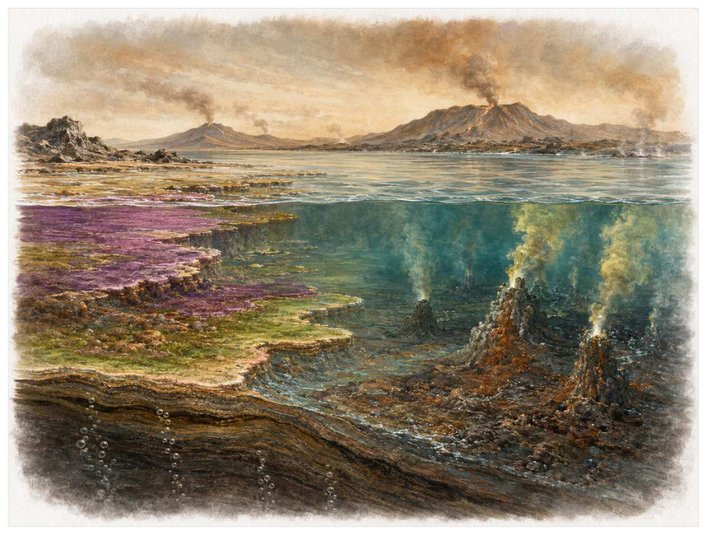
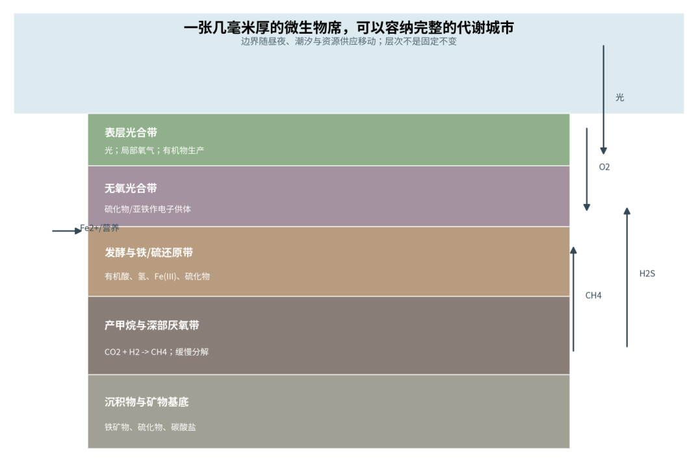

第01篇 · 最早的生命世界 · 第 3 章
看不见的全球网络：早期代谢与元素循环
本篇主题:最早的生命世界
从岩石中的微弱信号开始，理解微生物如何长期主宰地球。

本章科学复原配图 （用于呈现结构与生态关系, 不替代化石照片、测量数据与系统发育证据。）
生命史推进到约35亿至24亿年前时，旧支系仍在延续，新结构也开始改变竞争规则。生命在大部分早期历史中没有神经、骨骼或器官，但已经发明多种获得能量的方法。发酵、产甲烷、无氧光合作用、铁和硫的氧化还原反应把海洋中的化学梯度转化为生命活动。一个群体的废物往往是另一个群体的食物，生态系统因此以代谢接力而不是大型捕食为骨架。
进入这个时代
若真正置身其中，首先感受到的是介质本身：水是否含氧、地面是否稳定、空气是否干燥、植被是否遮挡视线。身体结构只有放在这些条件中才有意义。海水可能呈现富铁、低氧并带有硫化物的分层状态。太阳光只能驱动表层反应，沉降的有机颗粒把能量带向深处；在那里，微生物沿着收益由高到低的电子受体顺序分解它们。
在“看不见的全球网络：早期代谢与元素循环”所覆盖的时间里，不能把地理与气候当作固定背景。海陆位置、海平面、河流或植被结构会改变资源可达性，同一性状在不同地区可能得到完全相反的选择结果。
以看不见的全球网络：早期代谢与元素循环为例，演化的单位是种群而不是单个英雄。个体结构影响生存，但地理分布、繁殖速度、幼体死亡率和种群规模决定变异能否保留下来。化石中最醒目的成年骨架，未必是决定支系命运的阶段。 在本章中，这一约束具体落在“生产、发酵和终端呼吸形成代谢接力”这条关系上。
再从约35亿至24亿年前的时间尺度看，生态位不是预先摆好的空格，而是生物与环境共同形成的关系。掘穴者改变沉积物，森林固定河岸，礁体构建者制造硬底，巨型植食者改变火与养分。生物占据生态位的同时也在制造新的生态位。 它与“化能自养”共同决定了后续变化可以沿哪些路径发生。

图 3-1 微生物席内部在毫米尺度形成光、氧和硫化物梯度。
生态系统如何运转
“生产、发酵和终端呼吸形成代谢接力”体现了生态系统的反馈性。一方结构或行为稍有改变，另一方的防御、逃避、繁殖和空间选择就会重新排列，长期累积后才形成宏观演化差异。
围绕“生产、发酵和终端呼吸形成代谢接力”，从演化树看，相似关系可能在远亲中反复出现。功能相近不必意味着近缘，而同一祖先结构也可能被后代改作完全不同的用途；生态解释必须与系统发育互相校验。 对看不见的全球网络：早期代谢与元素循环而言，这一后果还会与“铁、硫和碳循环互相制约”相互放大或抵消。
在约35亿至24亿年前，“铁、硫和碳循环互相制约”把环境条件转化为生物之间的差异。相同气候并不会平均影响所有支系，因为它们利用的食物、水层、底质和繁殖地点并不相同。
围绕“铁、硫和碳循环互相制约”，当环境快速越过生理阈值时，原有互动甚至来不及通过适应重新平衡。此时灭绝的选择性会更多取决于分布、食物来源和繁殖速度，而不是平时竞争中的相对强弱。对看不见的全球网络：早期代谢与元素循环而言，这一后果还会与“微生物通过交换代谢产物稳定群落，也会竞争有限的电子供体”相互放大或抵消。
本章的一条关键关系是“微生物通过交换代谢产物稳定群落，也会竞争有限的电子供体”。它首先改变资源在个体之间的分配：能更早发现、处理或占据资源的种群获得收益，而另一方会承受新的选择压力。
围绕“微生物通过交换代谢产物稳定群落，也会竞争有限的电子供体”，这种关系没有永恒赢家。收益随密度和环境改变：防御越常见，攻击专门化的价值越高；资源越稀少，维持昂贵结构的代价越大。化石记录中的扩张与衰退，常是这种动态平衡被外部事件打破的结果。 对看不见的全球网络：早期代谢与元素循环而言，这一后果还会与“生产、发酵和终端呼吸形成代谢接力”相互放大或抵消。
关键演化创新
在“看不见的全球网络：早期代谢与元素循环”中，围绕“化能自养”，“化能自养”没有把生物推向更高级层级，而是重新划分可利用资源。它让某些水层、食物尺寸、活动时间或繁殖地点变得可行，同时也带来能量、材料和发育控制成本。 它首先需要在约35亿至24亿年前的生态条件下产生可测量收益。
就“化能自养”而言，研究者通过近缘支系比较、发育同源、关节活动、微观组织和出现顺序重建这条路径。真正有价值的过渡化石不是“半成品”，而是证明中间组合可以独立生活。 本章把它与“无氧呼吸”并列，是为了显示复杂性状往往依赖多部分协同。
在“看不见的全球网络：早期代谢与元素循环”中，围绕“无氧呼吸”，“无氧呼吸”一旦出现，还会改变其他物种的环境。新的捕食方式、取食高度或繁殖场所会制造选择压力，促使整个群落而不只是发明者发生响应。 它首先需要在约35亿至24亿年前的生态条件下产生可测量收益。
就“无氧呼吸”而言，它的成功具有条件性。环境稳定时，专门化可提高效率；危机到来时，同一专门化可能限制食物和栖息地选择。演化创新因此既能开启辐射，也能制造新的脆弱性。 本章把它与“固氮”并列，是为了显示复杂性状往往依赖多部分协同。
在“看不见的全球网络：早期代谢与元素循环”中，围绕“固氮”，“固氮”没有把生物推向更高级层级，而是重新划分可利用资源。它让某些水层、食物尺寸、活动时间或繁殖地点变得可行，同时也带来能量、材料和发育控制成本。 它首先需要在约35亿至24亿年前的生态条件下产生可测量收益。
就“固氮”而言，这一变化还可能在多个支系中独立发生。若功能相似而解剖来源不同，就是趋同；若结构来自共同祖先但功能改变，则属于同源结构的分化。二者不能仅靠外观判断。 本章把它与“化能自养”并列，是为了显示复杂性状往往依赖多部分协同。
生命群像：把物种放回生态网络
铁氧化微生物（iron-oxidizing microbes）
从外形看，铁氧化微生物（iron-oxidizing microbes）最容易被记住的是把亚铁氧化为三价铁并促进铁矿物沉淀。它生活在太古宙至今，大小约微米级，承担铁丰富、氧或硝酸盐有限的界面这一生态功能。把年代、体型和功能放在一起，才能避免把奇特形态当成无意义装饰。
对铁氧化微生物而言，从种群角度看，偶发捕猎和个体伤病远不如长期繁殖率重要。广泛分布的普通个体比一具异常巨大的标本更能代表支系，然而普通个体往往较少进入公众叙事。研究者必须防止把化石收藏偏好误当成古代丰度。 这使“把亚铁氧化为三价铁并促进铁矿物沉淀”不能脱离其铁丰富、氧或硝酸盐有限的界面角色来理解。
支持该解释的材料包括古老条带状铁建造不能简单归因于单一生物过程。若不同证据出现冲突，应优先报告范围而不是强行给出单值。例如体长会随参照类群变化，运动能力会随软组织假设变化，系统位置也会随新增性状重新计算。
由铁氧化微生物这个案例看，它也展示专门化的双面性：结构在稳定环境中提高效率，却可能在气候、食物或竞争格局突变时限制转向。灭绝不是对设计的道德评分，而是性状、地理范围和偶然事件相遇后的历史结果。它在太古宙至今留下的记录，因此同时是第3章所讨论的形态史和生态史的一部分。
无氧光合细菌（anoxygenic phototrophs）
无氧光合细菌（anoxygenic phototrophs）是太古宙至今的一名真实生态成员，而不是通往后代的抽象过渡。它约有微米级，以使用硫化物、亚铁或其他电子供体的光照水层的方式获取资源；证明早期光合作用可能先于水裂解释放氧的机制反映了其祖先历史与局部选择压力共同留下的结果。
对无氧光合细菌而言，把它放回群落后，结构的意义更清楚。食物并不会平均分布，水深、植被高度、底质和季节把资源切成小块；它的身体让其中一部分资源可被利用，也使它与近缘种错开生态位。种群命运还取决于幼体能否成长、繁殖地点是否稳定以及灾害后是否仍有避难所。 这使“证明早期光合作用可能先于水裂解释放氧的机制”不能脱离其使用硫化物、亚铁或其他电子供体的光照水层角色来理解。
我们之所以能够作出上述判断，主要因为具体哪条光合支系最早仍难由化石直接判定。单一结构通常有多种功能解释，所以还要查看磨损、病理、肌肉附着、沉积环境和近缘比较。计算模型能排除不可能姿势，却不能自动恢复没有保存的软组织。
由无氧光合细菌这个案例看，面对仍有争议的细节，负责任的复原不是停止讲述，而是标注证据等级。形态、年代和亲缘可较确定，具体姿势、叫声、求偶和群猎则按材料降级；新标本会在这些边界内继续改写认识。 它在太古宙至今留下的记录，因此同时是第3章所讨论的形态史和生态史的一部分。
固氮微生物（nitrogen-fixing microbes）
若把镜头从时代拉近到个体，固氮微生物（nitrogen-fixing microbes）会首先进入视野。它生活于远古至今，体型约微米级。作为贫乏可利用氮的水体和沉积物，它依靠氮酶把惰性氮气转为生物可用氮，维持初级生产与环境和其他生物发生关系。
对固氮微生物而言，同域物种的存在迫使它分割时间与空间。相似牙齿不一定吃完全相同的食物，相似四肢也可能适应不同底质；微磨损、同位素和伴生群落常能揭示这种细分。环境改变时，原本减少竞争的专门化又可能成为迁移和改食的障碍。这使“氮酶把惰性氮气转为生物可用氮，维持初级生产”不能脱离其贫乏可利用氮的水体和沉积物角色来理解。
其复原依赖氮同位素会受多过程影响，古老氮酶类型的年代依赖分子重建。年代和保存形态通常属于较强证据，体重、速度、颜色和社会行为则需要额外假设。书中把这些层次拆开，是为了让读者知道哪些可视为事实，哪些仍应等待更多材料。
由固氮微生物这个案例看，它不是祖先链条上必须跨过的一格。演化树中同时存在许多近缘支系，只有少数留下后代；旁支化石同样关键，因为它们显示某组性状出现的顺序和可行范围。 它在远古至今留下的记录，因此同时是第3章所讨论的形态史和生态史的一部分。
发酵微生物（fermentative microbes）
发酵微生物（fermentative microbes）存在于生命早期至今。现有材料显示其大小约微米级，生态位置接近缺乏外部电子受体的无氧微环境。把有机物拆解为有机酸、氢和二氧化碳，为其他代谢者提供底物让它成为理解本章主题的合适案例，但不意味着同一类群所有成员都采用相同策略。
对发酵微生物而言，它的成功不需要在所有性能上压倒其他物种，只需在特定资源和风险组合中留下更多后代。速度、咬合、装甲、感官与繁殖之间存在预算，某项性能极端化往往意味着另一项被牺牲。所谓“霸主”只是复杂权衡后的区域性结果。 这使“把有机物拆解为有机酸、氢和二氧化碳，为其他代谢者提供底物”不能脱离其缺乏外部电子受体的无氧微环境角色来理解。
科学家并未直接看见它生活，依据是发酵路径种类繁多，岩石记录通常只能给出间接证据。现代类比可以帮助提出可检验模型，却不能取代化石；越具体的短时行为，越需要痕迹、内容物或重复病理等直接线索。
由发酵微生物这个案例看，这个案例还提醒我们，亲缘和生态角色是两件事。近亲可以因资源分化而外形迥异，远亲也能因相似压力而趋同。把它放在演化树和食物网两个坐标中，才不会误写成线性进步。 它在生命早期至今留下的记录，因此同时是第3章所讨论的形态史和生态史的一部分。
甲烷氧化古菌（anaerobic methanotrophic Archaea）
在古老过程的现代代表，甲烷氧化古菌（anaerobic methanotrophic Archaea）以约微米级聚集体的身体参与食物网。它不是孤立的“明星生物”，而是甲烷与硫酸盐交界处；消耗向上扩散的甲烷，限制其进入海洋和大气决定它能利用哪些资源，也决定必须承担哪些成本。
对甲烷氧化古菌而言，从种群角度看，偶发捕猎和个体伤病远不如长期繁殖率重要。广泛分布的普通个体比一具异常巨大的标本更能代表支系，然而普通个体往往较少进入公众叙事。研究者必须防止把化石收藏偏好误当成古代丰度。 这使“消耗向上扩散的甲烷，限制其进入海洋和大气”不能脱离其甲烷与硫酸盐交界处角色来理解。
证据核心是早期海洋硫酸盐供应较低，现代反应速率不能直接套用。化石记录更擅长回答“结构是什么”，较难回答“每天怎样行动”。足迹、胃内容物、咬痕或胚胎若存在，会显著缩小推测范围；若只有零散骨骼，行为叙述就必须更克制。
由甲烷氧化古菌这个案例看，它所代表的身体方案后来可能消失，也可能被远亲以不同材料重新发明。生命史因此既有可重复的功能解，也有不可复制的谱系路径。两者结合，才解释现代生物为何既熟悉又偶然。 它在古老过程的现代代表留下的记录，因此同时是第3章所讨论的形态史和生态史的一部分。
因果链：环境、生态与性状
“生产、发酵和终端呼吸形成代谢接力”与“微生物通过交换代谢产物稳定群落，也会竞争有限的电子供体”之间常存在反馈。一个支系改变沉积、植被或猎物数量后，环境会对其自身和其他支系产生新的选择压力；短期收益可能导致长期资源下降，局部工程行为也可能创造此前不存在的栖息地。铁氧化微生物作为铁丰富、氧或硝酸盐有限的界面，固氮微生物作为贫乏可利用氮的水体和沉积物，即使从不直接相遇，也可能经由这种环境改造联系起来。生态系统因此不是静态背景上的竞赛场，而是参与者不断修改规则的动态结构；这正是解释看不见的全球网络：早期代谢与元素循环为何会留下长期后果的关键。
亲缘关系为功能解释设定边界。“固氮”若在近缘支系中以不同程度出现，最简解释通常是祖先已具备部分结构，后代分别强化或丢失；若远亲在相似生态位中出现相近功能，则需要检查内部解剖是否来自不同材料。铁氧化微生物与固氮微生物可用于演示这一区分：外形近似不自动证明近缘，外形差异也不否定深层同源。把系统发育树、年代和生态证据叠在一起，才能判断看不见的全球网络：早期代谢与元素循环中的相似究竟来自共同继承、趋同还是保留的原始特征。
从资源入口看，“生产、发酵和终端呼吸形成代谢接力”决定能量首先由谁获得，而“铁、硫和碳循环互相制约”决定能量随后怎样在群落中转移。只有当个体能够借助“化能自养”把资源转化为生长或后代时，形态优势才会成为种群优势。铁氧化微生物与无氧光合细菌分别展示了这条链上的不同位置：前者的把亚铁氧化为三价铁并促进铁矿物沉淀使其偏向铁丰富、氧或硝酸盐有限的界面，后者的证明早期光合作用可能先于水裂解释放氧的机制则服务于使用硫化物、亚铁或其他电子供体的光照水层。这并不意味着二者必然直接竞争；更常见的情况是，它们通过共享资源、改变栖息地或影响共同捕食者而间接连接。把这种间接作用纳入，才看得见看不见的全球网络：早期代谢与元素循环不是物种名单，而是一张持续重新分配能量的网络。
“微生物通过交换代谢产物稳定群落，也会竞争有限的电子供体”说明环境不是在所有个体身上平均施力。若一个种群分布广、世代较短或能使用多种资源，它可能把一次局部危机吸收到地理和生活史差异之中；若另一个种群依赖狭窄水深、单一植物或特定繁殖场，平时高效的专门化就可能在变化中放大风险。无氧光合细菌和固氮微生物的差异可以用来提出这种比较，但不能仅凭外形宣布谁更适应。真正需要的是地层连续性、地区分布、年龄结构和伴生群落共同告诉我们，哪些性状在看不见的全球网络：早期代谢与元素循环的具体条件下转化成了更稳定的繁殖。
如果把看不见的全球网络：早期代谢与元素循环当作一次自然实验，可以追问：假如“生产、发酵和终端呼吸形成代谢接力”较弱，“无氧呼吸”是否仍会带来同样收益；假如“铁、硫和碳循环互相制约”更强，铁氧化微生物的把亚铁氧化为三价铁并促进铁矿物沉淀是否反而成为负担。反事实无法直接验证，却能帮助研究者识别模型隐含的因果假设。随后再用铁建造和硫化物矿物反映海洋氧化还原状态和氮同位素与酶系统研究约束固氮历史寻找可区分的预测：不同机制应在体型分布、损伤类型、沉积环境或出现顺序上留下不同痕迹。科学解释不是为现有图景编一个顺耳故事，而是让相互竞争的解释接受同一批材料检验。
时代横截面：个体、种群与证据
把铁氧化微生物与无氧光合细菌并排观察，可以看到同一时代并不存在唯一正确的身体方案。铁氧化微生物以把亚铁氧化为三价铁并促进铁矿物沉淀参与铁丰富、氧或硝酸盐有限的界面，无氧光合细菌则依靠证明早期光合作用可能先于水裂解释放氧的机制承担使用硫化物、亚铁或其他电子供体的光照水层；两者可能在食物尺寸、活动空间或时间上错开，从而降低直接竞争。若环境改变使这些维度重新重叠，原先共存的支系才可能发生更强替代。比较的目的不是判断谁更先进，而是识别每套结构在哪些条件下有效、在哪些条件下暴露成本。
尺度转换是看不见的全球网络：早期代谢与元素循环最容易被忽略的问题。铁氧化微生物的一次摄食、一次移动或一次繁殖属于分钟到季节尺度；种群扩张需要数百至数万年；“化能自养”在演化树上的固定则可能跨越更久。短期观察能够说明结构怎样工作，却不能单独解释支系为何在约35亿至24亿年前扩张。反之，宏观多样性曲线能显示替换，却不能指出每次选择发生在什么身体和生活阶段。把尺度接起来，因果链才完整。
从失败的替代解释出发，能够看见研究如何推进。若把铁氧化微生物简单解释为铁丰富、氧或硝酸盐有限的界面，就应检查其把亚铁氧化为三价铁并促进铁矿物沉淀是否真的适合该功能；若另一种功能同样可行，再看磨损、同位素、沉积环境或共存生物能否区分。无氧光合细菌与固氮微生物提供了比较基线，帮助判断某一结构是普遍祖征、特殊适应还是成长阶段差异。结论不是从外观直觉跳出，而是在一系列被排除的可能性之后留下。
本章还可以作为灭绝选择性的预演。若危机首先削弱“生产、发酵和终端呼吸形成代谢接力”，依赖该环节的铁氧化微生物可能比外形更脆弱但食物广泛的无氧光合细菌更早衰退；若危机破坏的是繁殖场或幼体环境，成年体型和武器几乎不能提供保护。分布范围、成熟速度、休眠能力与食谱因此要和把亚铁氧化为三价铁并促进铁矿物沉淀、证明早期光合作用可能先于水裂解释放氧的机制等显眼结构一起评估。危机筛选的是整套生活史，而不是单项竞技能力。
从保存角度看，铁氧化微生物和无氧光合细菌也可能被化石记录不公平地对待。铁氧化微生物的把亚铁氧化为三价铁并促进铁矿物沉淀若包含坚硬、容易辨认的部分，就更可能被采集和命名；无氧光合细菌若身体柔软、个体小或生活在侵蚀环境，真实丰度可能被严重低估。铁建造和硫化物矿物反映海洋氧化还原状态能补充一部分信息，氮同位素与酶系统研究约束固氮历史又提供另一尺度的限制。只有先问“什么容易被保存”，再问“什么当时常见”，才不会把博物馆展柜的比例误当成古生态比例。
科学家为什么这样判断
使用“铁建造和硫化物矿物反映海洋氧化还原状态”时必须处理保存偏差。坚硬组织、低氧埋藏和火山灰覆盖更容易留下记录，岩层出露与采集历史又决定样本数量。统计分析通常要校正这些不均匀性，避免把采样强度当作真实多样性。
围绕“氮同位素与酶系统研究约束固氮历史”，高可信结论通常来自独立方法一致。例如形态暗示某种食性时，微磨损、同位素或胃内容物若给出相同方向，解释便更稳固；若结果冲突，就应保留生态弹性或地区差异。
证据条目“基因系统的分子系统树帮助推测代谢的相对古老程度”的作用，是把肉眼可见的化石转化为可检验结论。研究者先确认样品的层位和成岩历史，再测量结构、比较近缘种并建立替代模型；若解释只在一套参数下成立，就不能写成唯一事实。
在“看不见的全球网络：早期代谢与元素循环”这一问题上，把上述方法合在一起，研究者才能从残缺材料走向受约束的复原。任何一条证据都可能受到成岩、污染、样本量或现代类比的限制；结论越具体，越需要多条独立证据指向同一方向，并与约35亿至24亿年前的地层背景相容。
过去的图景与今天的证据
不能把一种同位素异常直接翻译成某个唯一代谢。相同信号可能由不同过程叠加产生，沉积后改造也会改变原始比例。生命史重建必须同时考虑生物化学、海洋模型和岩石保存。
围绕“看不见的全球网络：早期代谢与元素循环”，数据存在范围时，本书使用约数而非虚假精确值。体型会因缺失骨骼和软组织密度变化，年代会因定年误差调整，灭绝比例会因分类和采样校正改变；一个区间往往比醒目的单值更科学。
对约35亿至24亿年前的材料而言，当多种机制可以并存时，不应为了故事简洁强迫选择唯一原因。氧气、温度、营养、捕食和地理隔离常形成反馈，研究目标是约束各环节的时间和强度，而不是寻找一句万能口号。
跨尺度观察
空间镶嵌：同一地质时期包含多个大陆、纬度和海盆。地区之间可因山脉、海峡和洋流形成不同群落，局部化石库不能代表全球平均。比较多个地点能区分真正的全球事件与区域替换。 在“看不见的全球网络：早期代谢与元素循环”中，这一尺度具体连接了“生产、发酵和终端呼吸形成代谢接力”与“化能自养”，因而不能只从单个成年标本判断。
系统发育：直接祖先极难在化石中确认，因为旁支和祖先形态可能非常相似。更可靠的表达是某物种位于一组关键分叉附近，展示某些性状已经出现。演化树表达亲缘，不表达价值高低。 在“看不见的全球网络：早期代谢与元素循环”中，这一尺度具体连接了“铁、硫和碳循环互相制约”与“无氧呼吸”，因而不能只从单个成年标本判断。
微生物底盘：宏体生态依赖微生物完成分解、固氮和碳硫循环。即使章节聚焦巨型动物，尸体最终仍由微生物和小型分解者处理；大灭绝后的恢复也往往先表现为生产和分解网络重建，而非大型动物立即回归。 在“看不见的全球网络：早期代谢与元素循环”中，这一尺度具体连接了“微生物通过交换代谢产物稳定群落，也会竞争有限的电子供体”与“固氮”，因而不能只从单个成年标本判断。
通向下一个时代
从本章走向下一阶段时，需要保留的不是一串物种名，而是一个因果链：环境改变可用能量与栖息地，生态关系筛选性状，性状又反过来改造环境。这些无形网络准备了下一场巨大转折。氧合光合作用一旦大规模运转，原本局部的代谢产物氧气将开始重写海洋和大气。
本章精选来源
- [R2] Knoll, A. H. Life on a Young Planet: The First Three Billion Years of Evolution on Earth. Princeton University Press, 2003.
- [R3] Schopf, J. W. Fossil evidence of Archaean life. Philosophical Transactions of the Royal Society B 361, 869-885 (2006).
- [R4] Djokic, T. et al. Earliest signs of life on land preserved in ca. 3.5 Ga hot spring deposits. Nature Communications 8, 15263 (2017).
- [R6] Nutman, A. P. et al. Rapid emergence of life shown by discovery of 3,700-million-year-old microbial structures. Nature 537, 535-538 (2016).
- [R7] Garcia, A. K., Cavanaugh, C. M. & Kacar, B. The curious consistency of carbon biosignatures over billions of years of Earth-life coevolution. ISME Journal 15, 2183-2194 (2021).